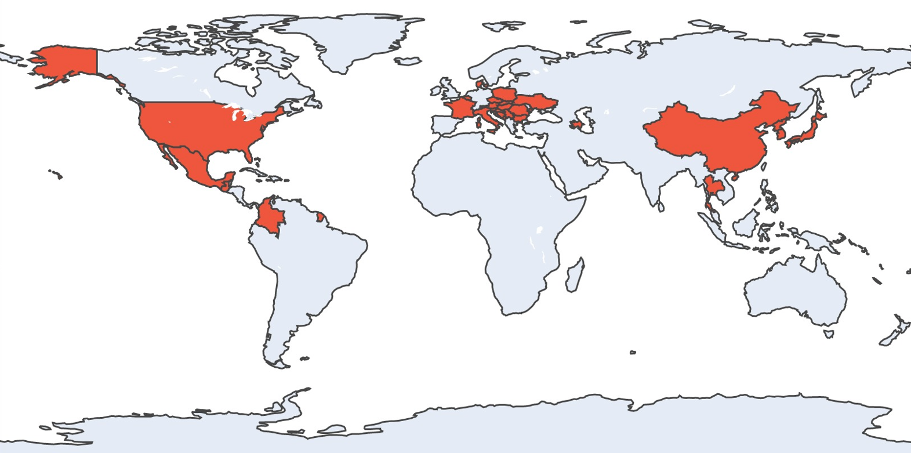

"Only those who attempt the absurd...will achieve the impossible. I think... I think it's in my basement. Let me go upstairs and check."
Hey, Trey Manuszak here. Most know me for my willingness to open and explore the many doors that life throws at me. Below is a summary of those doors I've opened.
Programming
During my math undergrad, I took an elective "Intro to Programming" class during the Spring 2018 semester, which covered the basics of programming and the language Java. Just after quickly learning about loopsi, functions and arrays, I started experimenting with my own programs. The first that I have record of, was a program that found the n-th number in the Hofstadter Q sequence. You might be thinking that's quite a handful for a first big jump into programming and it surprises me too! Although, it wasn't the mathematical complexity that was tough to grapple with, but the programming of finding elements in an array according to other elements in the same array.
You might also be thinking that it is quite an esoteric program to implement for a first timer, but I was reading Gödel, Escher, Bach: an Eternal Golden Braid by Douglas Hofstadter at the time of taking this class. It is a book that has influenced much of my curiosity for highly abstract ideas today. Hofstadter's book explores the notions of self-reference being the basis for consciousness through the mathematics introduced by Gödel, etchings by Escher, and music composed by Bach.
Although the course left me highly interested in the field, I didn't take any further computer science courses during my undergrad. But that doesn't mean mean I stopped programming! During my free time, I would work on Project Euler problems, usually in Python, which are challenging math problems that require a cleverly crafted program to solve. Without any formal knowledge in algorithms or data structures, I ended up getting into the top 1% of solvers on the site (although I sit just outside now, since I haven't been solving in a while)!

Following my undergrad in math and short experimentation in secondary education, I found myself wanting to pursue a Master's in Computer Science, something I only considered a hobby up to that point. I spent a year going through the necessary undergrad courses to qualify for the graduate program. Just before my first graduate semster, I got an opportunity for a software developer internship at Asure Software. There, I primarily worked on developing a web application in C# for PGP file encryption and SFTP using the .NET platform. This was my first introduction to the world of cryptography, which I am highly passionate about now. Also at the internship, I built a class library for interacting with the Goldman Sachs Transaction Banking API for seamless ACH payments. Lastly, I worked with my mentor to rewrite the existing payroll tax management system database schema for a future company-wide transition to a PostgreSQL database schema.
After completing my internship, I got an email from a research lab at ASU about an open Applied Cryptography research position. It asked for all the theoretical skills I learned about abstract algebra, which I learned during my undergrad, that very few computer science students would qualify for. I thought I'd be perfect for the position, applied, and got the job! I held this research position for a year and studied many topics of cryptography, particularly
- Post-quantum Cryptography,
- Threshold Cryptography,
- Coding Theory,
- Distributed Storage Blockchain,
- Zero-knowledge Proofs,
- Multi-party Computation.
In my short time so far programming, I have completed quite a few projects. Here are a few summarized:
- HelpMeHike: This is an Android application where the user, a hiker, takes occasional 30 second videos of their face and it gets sent to a remote server on an AWS EC2 instance. Once uploaded to the server, using remote photoplethysmography (rPPG) techniques, we extract the user's heart rate and present it back to the user as a time-independent graph upon request.
- Automated Warehouse Scheduling: Using clingo and answer set programming techniques, I programmed a warehouse robotics scheduler for delivering product in global time optimal schedules. This was one of my favorite projects because it introduced me to the subfield of AI called knowledge representation and reasoning (KRR). When I first started doing my Master's of Computer Science, I thought I wanted to focus on AI and ML, but after taking a few courses, I was quite frustrated and felt that I fell into the trap of taking the artificial intelligence and machine learning buzzwords too literally. I always had the impression that this field was really breaking ground and truly working towards creating metal machines with consciousness. After taking a few of the courses, the only thing I took away from the field is that there is very little intelligence in what is produced. To me, especially given my background in the theoretical math of multidimensional vector calculus, which is the basis of ML and AI, it felt like AI and ML are just fancy words for cleverly reducing and searching a large space. It just felt like another algorithms course. But, taking a KRR course felt a whole lot different. It was based in logic, which felt far closer to the path of gaining knowledge. It also inherently creates programs that can easily produce reasons for it's output. It's hard to pin down what intelligence and consciousness is, but having an ability to reason certainly feels like it's towards the right step. This felt like what ML and AI were supposed to be.
- Auto-scaling Image Recognition: This project got my feet wet into cloud computing on the Amazon Web Services platform. It is a web application where a user uploads an image to an Express web server hosted on an EC2 instance. The server then uploads the image to S3 and passes a message to the app tier instances, which pull the image back from the bucket and classifies the image with a pre-trained ResNet18 classifier. The classification is then delivered back to the user.
- HandGestures App This is another Android application where users can download and learn sign language gestures, specific to the subject area of computer science. Then, the user can practice the gestures, which involves recording themseslves performing the sign and uploading it to the server, which is hosted in an EC2 instance. Then, on the backend, we have a trained ML model to take the body coordinates with Tensorflow PoseNet and classify the gesture that the user performed.
- Movie Recommender System: This project was attempted two different times. The first time, I wanted to focus on making the movie recommender system using one-class collaborative filtering techniques. I wanted to try working with a one-class recommender system, since most real world applications to recommender systems involve one-class data sets. Also it would be a challenge for me to make a decent recommender system with less descriptive data. It also had to be usable with just student-accessible hardware resources. The final result was a space-improved wiZAN-Dual algorithm. For the second attempt, done in a Jupyter Notebook, I wanted to still use collaborative filtering, but I took a community clustering approach. I mapped user's movie preferences in high-dimensional movie preference space and clustered communities of similar users together. Most importantly, the act of computing a recommendation for the user can be done on the client-side with less than 10KB of data transfer, which recommends movies from the Netflix competition catalog.
Mathematics and Teaching
I was always a stellar math student in my youth. After my brief trade school luthiery experience, I was unsure if I what I wanted to commit to studying upon going back to school, so I just started taking math courses. Soon enough, I ran out of math courses to take at the community college, so I said "why not just keep going and get a mathematics degree?". And so, I attended Arizona State for my Bachelor's in Mathematics. During the same time, I was a math tutor for the community college and absolutely loved it.
By the time I was getting to the end of my undergrad, I decided that I should try my hand at secondary education. I was working toward my certificate in teaching and student taught for both middle school and high school, all while still doing my mathematics classes and tutoring! After six months of each, it was rewarding, but something about it was not as romantic as my tutoring position. Self reflecting now, I could tell that there was just 5% of my time spent teaching and 95% on administrative and baby sitting duties. I still believe teaching is going to be my final occupation in some form, but now is not that time. I also felt limited in that I could only teach to 30 students at a time. There will come a time where I will return to a more massive stage of education, but till then...
Travel
One of my life's goals is to join the Travelers' Century Club. This is a club for those who have visited one hundred or more of the world's countries and territories. Here is my current progress.
What am I learning right now?
One of the largest reasons why a career around programming interests me is that it puts you on a never-plateauing learning curve. Constantly learning and improving my world-view is what I live for. Below are some things I plan on learning in the near future, in a semi order of importance.
- Rust programming. In particular, I want to Rust for its popularity in security-focused applications. I plan on playing around with the Black Hat Rust book by Sylvain Kerkour and Rust for Rustaceans by Rust legend Jon Gjengset.
- Hardware Description Language programming. The research lab that I worked for specialized in secure hardware architectures. Seeing all of my coworkers work on very applied and low-level work showed me how theoretically creating a secure cryptosystem is quite a bit easier in many aspects than actually implementing it. I recently bought a Basys 3 FPGA trainer board and will be diving into the deep end soon. This is also an opportunity for me to properly sit down and learn computer architecture, as much of my knowledge just comes from passing conversation. I will be relying heavily on the courses freely available taught by Onur Mutlu.
- Zero-knowledge proofs. As I explained above, some of my research was in zero-knowledge proofs and it is a subject that intrigues me greatly. The ability to prove knowledge of something without revealing exactly what it is, absolutlely fascinates me. Its applications to privacy are also going to be revolutionary in the future. The field is changing unbelievably fast each year largely thanks to the blockchain and cryptocurrency community. Most of my ZKP knowledge comes from the 80s along with a fairly good understanding of the guarantees and assumptions of today's ZKPs, but no detailed implementational knowledge. I'll be going through Justin Thaler's manuscript, which is frequently updated with new protocols, along with the summer course on PCPs by Alessandro Chiesa, Z-cash co-founder.
- Category Theory for Programmers. There are a lot of reasons why I want to go through this blog series. One, is it gives me a chance to try out Haskell. I previously played around with functional programming in F#, and loved it, but I want the real-deal functional programming knowledge. Another reason why I want to go through this series is that category theory was always something that intrigued me during undergrad for its high degrees of math abstraction.
- Monetary Mechanics. The last two or three years I've been spending a lot of my free time in deep independent study learning about modern monetary mechanics and the global financial plumbing. I really don't know where this interest came from, but I have been deep into cryptocurrency for many years prior, so maybe there is a connection there. I have long held the belief that a decentralized form of money, like cryptocurrency could become a new global currency and benefit the world in many ways as a result. I think to test my belief I started actually trying to ask myself "what is money?", and that has sent me down this multi-year long rabbit hole. The more I learn about the global financial plumbing system, the harder it is to actually pin down what money is. In particular, I am really into learning about the eurodollar system as it is becoming more and more evident to me that it is the true world reserve currency and dictates much of the world's financial stability or disorder. Most of my learning material comes from Jeff and Emil at Eurodollar University along with blog posts from Maroon Macro. Occassionally, I'll read an academic paper on the topic, but not too often. Real monetary mechanics is definitely not being taught to econ majors properly, so a lot of the research is garbage, in my opinion.
- DeFi and Web3. The decentralized web is moderately interesting to me, as you can tell since this website has the option to be browsed via the decentralized web. I dont think it will take over the centralized web, but I do believe there is a place for it. DeFi, or decentralized finance, is also moderately interesting to me. I dont participate in it, but I can see it playing a crucial role in removing a lot of the trust, inneficiencies, and most importantly, anti-transparency I see when I study monetary mechanics, noted above. I haven't explored too much into the topics yet, but I plan on first going through the Berkeley courses freely available by Dawn Song, when I get the time to.
- Measure Theory. During my undergrad, I took a course in measure theory and quite enjoyed it. I might have to admit though, a lot of my learning strategy during undergrad optimized for short-term memorization to power me through those very difficult classes. So, I've forgotten most of my quite advanced math knowledge in real analysis and measure theory. Going back and learning the material at my own pace for deep understanding is a goal of mine.